ء-حماية e-Himaya
تقرير المرحلة P4b: تطبيق قادة فرق التدخل (الجزء الثاني): الكتابة بأقل قدر، تقارير الوضع، النجدة والخطر، الصور والصوت والنص، المستشفيات القريبة، والتقارير المفصّلة بقوالب يعتمدها المكتب، وجانب كل ذلك في لوحة القيادة
1. أين تقع هذه المرحلة من مسار المشروع
التبليغ
←
المعالجة
←
التحليل
←
مؤشرات الأداء KPI
←
التنبؤ بالذكاء الاصطناعي
←
اتخاذ القرار
- المعالجة: القائد يعمل بالأزرار والرقائق والعدّادات، فيصل تقرير الوضع والنقل في ثوانٍ ولو بقفازات.
- التحليل: الحصيلة بست خانات، آخر وضع لكل آلية، والتقرير المفصّل بأسئلة ثابتة حسب النوع، فتصير التقارير قابلة للمقارنة والإحصاء.
- اتخاذ القرار: النجدة والخطر على الطاقم في رأس بطاقة الحادث حتى يضغط المشغّل «اطّلعت»، ويرى القائد وقت الاطلاع.
2. مراجعة ← تصميم ← تطوير
الطلب: «اعتماد التقليل من الكتابة كأساس لبناء التطبيق، مع اعتماد نفس النسق والألوان» حسب النموذج (الإضافة 14). التصميم في
design-staff.md §5.
قرار حُسم: حساب شخصي لكل قائد فريق، لإضفاء المصداقية وعدم تداخل الأدوار (قرارك، مسجَّل في الملف الوصفي V13، القسم 12.2).
- النسق والألوان: شريط علوي داكن بالشعار والعنوان وسطر الآلية؛ شريط الاتصال الأخضر «متصل · آخر تحديث منذ N ث» أو الكهرماني دون اتصال؛ زر الخطوة الكبير بلونها؛ شريط سفلي بزرين ثابتين. كل الألوان من رموز نظام التصميم.
- شاشة المهمة: بطاقة بإطار أحمر حين تكون الأولوية عالية، المكان والمسافة وأمر القاعة؛ مسار بخمس محطات ووقت كل واحدة؛ أزرار «الطريق» و«القاعة» و«المبلّغ» (يظهر فقط إن أضاف المشغّل رقما عند التكليف).
- النجدة والخطر: زرّان ثابتان طوال المهمة، كل واحد يفتح رقائق (8 أنواع تعزيز، 6 أنواع خطر) ثم «أرسل».
- تقرير الوضع: النوع مؤكَّد أو مختلف، الخطورة 1 إلى 4، التعزيز لا أو نعم برقائق، ست خانات حصيلة، والمرفقات. الأول «تقرير أول» وما بعده «تحديث للوضع».
- نقل مصاب: لون الفرز، فئة العمر (ست فئات وغير معروف)، الجنس، وأقرب المستشفيات من طبقة الخريطة بالمسافة، أو «أخرى». دون اسم.
- الصور والصوت والنص: صورة من الكاميرا، ملاحظة صوتية حتى 60 ثانية، أو نص قصير؛ يُفحص نوع الملف من بايتاته ويُحفظ في التخزين.
- التقرير المفصّل (F-STF-05): قالب لكل نوع بأربعة أشكال فقط (رقائق، اختيار متعدد، نعم أو لا، عدد). المكتب يحرّره بثلاث لغات ويرى معاينته كما على الهاتف ثم يعتمده؛ اعتماد إصدار جديد يحيل السابق على التقاعد، والخادم يرفض جوابا على إصدار قديم.
- لوحة القيادة (F-DSH-35): قسم «من الميدان» يبدأ بالتنبيهات مع «اطّلعت»، ثم الحصيلة وآخر وضع لكل آلية والمنقولين والتقارير المفصّلة بعناوين القالب والمرفقات؛ عمود «التنبيهات» في «فرق المناوبة»؛ رقم الاتصال في المكان عند التكليف؛ وصفحة «قوالب التقارير».
3. لقطات
النموذج المرجعي (الإضافة 14):
تطبيق الأعوان بالعربية: الدخول، تنبيه المهمة، المهمة قبل الانطلاق وفي الطريق وفي المكان، طلب النجدة، تقرير الوضع والحصيلة، نقل مصاب، والتقرير المفصّل:
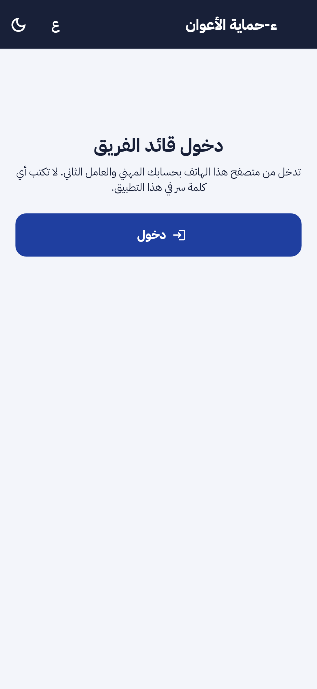
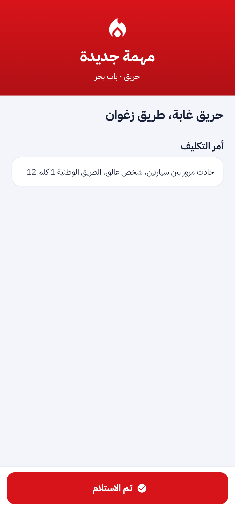
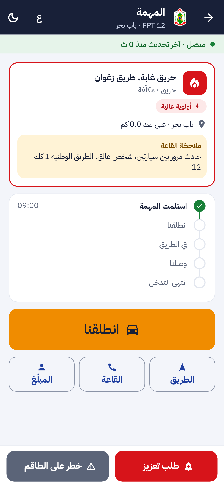
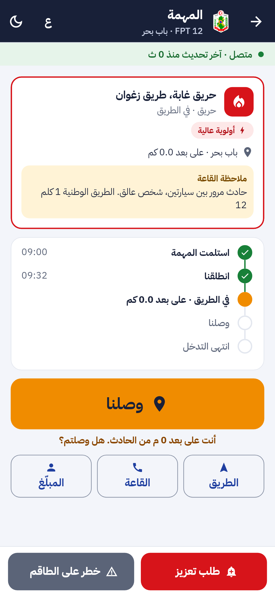
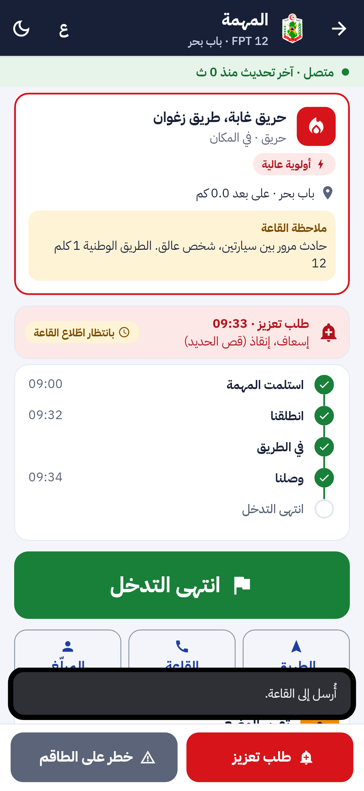
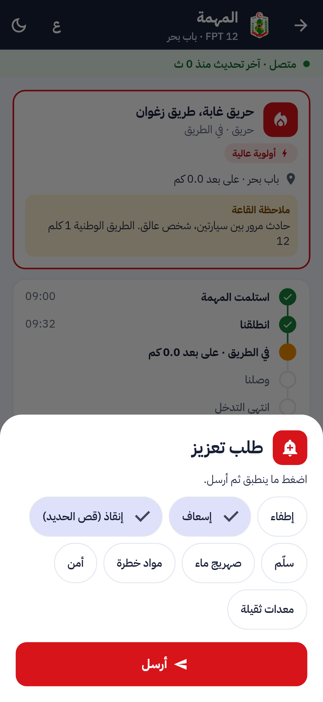
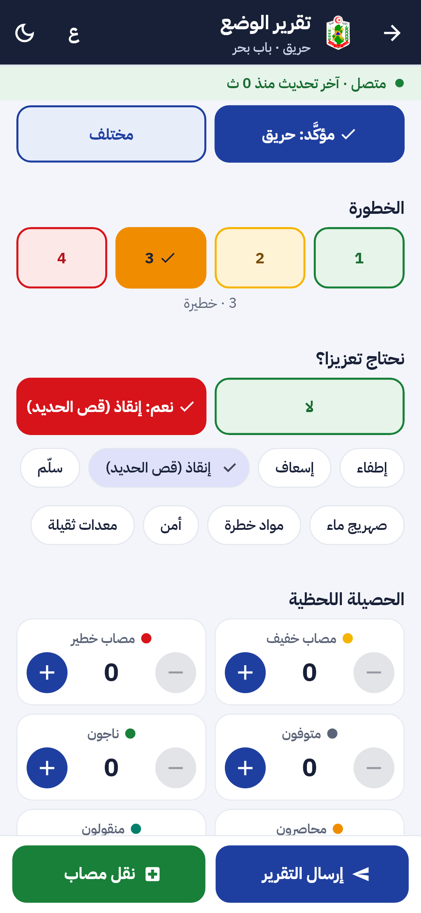
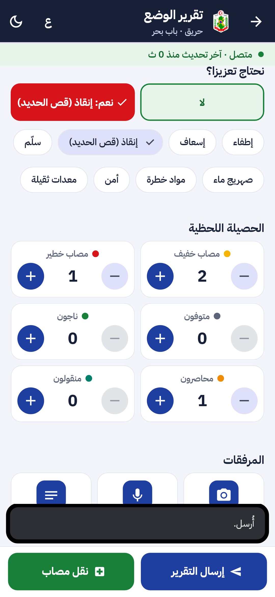
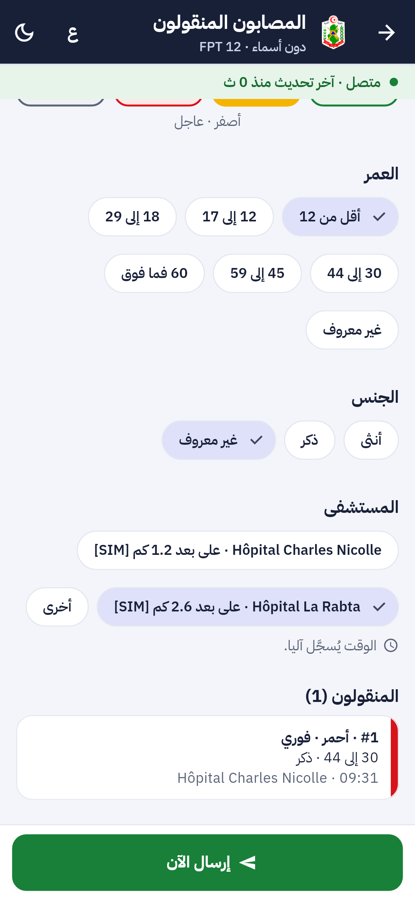
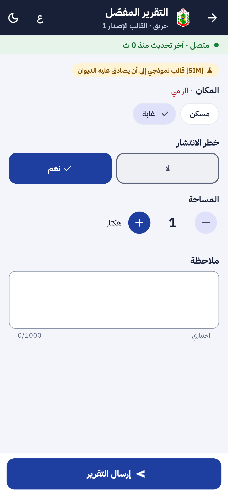
وفي لوحة القيادة: التكليف برقم الاتصال، ثم قسم «من الميدان» (التنبيهات و«اطّلعت»، الحصيلة، آخر وضع، المنقولون، التقرير المفصّل، الصور والصوت والنص)؛ صفحة «فرق المناوبة» بعمود التنبيهات؛ وصفحة «قوالب التقارير» مع معاينة الهاتف:
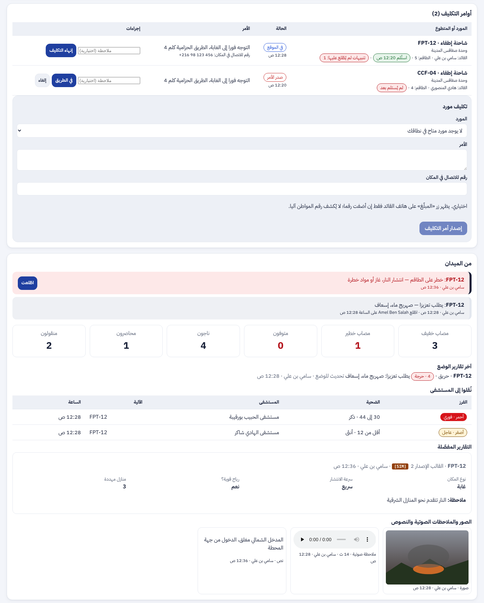
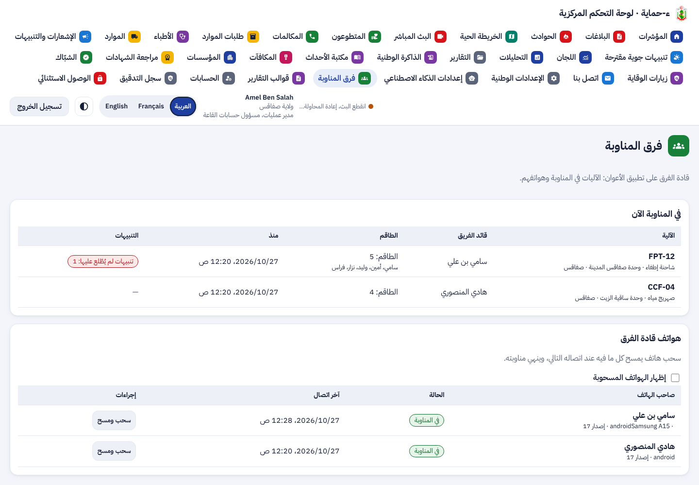
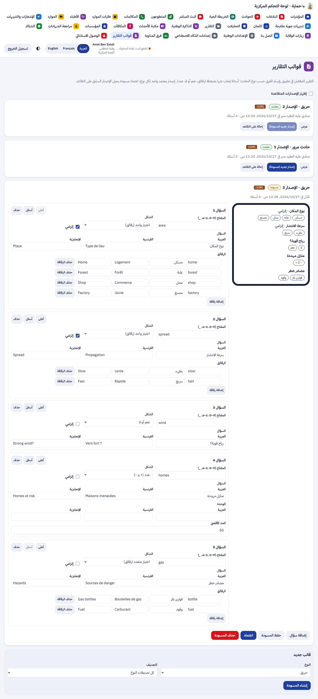
4. التقدم لكل جزء
| البند | الحالة | التقدم |
|---|
| النسق والألوان والكتابة بأقل قدر في كل الشاشات | منجز (P4b) |
|
| F-STF-03 تقرير الوضع، النجدة والخطر، المرفقات | منجز (P4a ثم P4b) |
|
| F-STF-04 الحصيلة بست خانات ونقل المصابين | منجز (P4a ثم P4b) |
|
| F-STF-05 التقرير المفصّل بالقوالب | منجز (P4b)؛ القوالب الأولى [SIM] حتى مصادقة الديوان |
|
| F-DSH-35 متابعة الفرق في اللوحة | منجز (P4a ثم P4b) |
|
| F-STF-06 وحدة الوقاية (P4c)؛ F-STF-07 و F-APP-38 (P4d) | معتمدة |
|
تقدم P4b: 100%. تطبيق الأعوان كله (P4a إلى P4d): حوالي 65%.
5. المحاكاة [SIM]
- [SIM] القوالب الأولى للأنواع الثمانية نموذج مقترح، معلَّم [SIM] في اللوحة وعلى الهاتف حتى يحرّر المكتب قوالبه ويعتمدها.
- [SIM] المستشفيات القريبة تُقرأ من طبقة خريطة تقريبية [SIM] إلى أن تصل القائمة الرسمية.
- [SIM] الآليات والأسماء والصور في اللقطات بيانات اختبار، ولقطات اللوحة مأخوذة بواجهة برمجية محاكاة.
6. الاختبارات المطبقة
| المكوّن | العدد | النتيجة |
|---|
| الخلفية (pytest) | 880، منها 7 مسارات جديدة في test_crew_field.py | كل اختبارات هذه المرحلة ناجحة؛ محليا ثلاثة اختبارات من مراحل سابقة (test_forecast و test_medical_referrals و test_sla) تتأثر بالبيانات المتراكمة في القاعدة المحلية وتفشل كذلك على main دون تغييرات هذه المرحلة |
| تطبيق الهاتف (flutter test) | 552، منها مساران كاملان جديدان وحالة نفاذ جديدة في test/staff/ | كلها ناجحة |
| لوحة القيادة (vitest) | 470 | كلها ناجحة |
flutter analyze و ruff و mypy و eslint و tsc | — | لا ملاحظة |
- الخادم: تقرير الوضع الأول ثم التحديث، التعزيزات بأنواعها، العدادات الجديدة ونقل القيم السابقة، النجدة والخطر و«اطّلعت» وعدد التنبيهات غير المطّلع عليها في المناوبات، المرفقات (النوع من البايتات، الحجم، المدة، العدد الأقصى)، المستشفيات القريبة من الطبقة، القوالب (مسودة، اعتماد، تقاعد، حذف) ورفض جواب لا يطابق القالب أو إصدارا قديما، وأمن مستوى الصفوف.
- التطبيق: التنبيه والخطوات والمسار والأزرار السريعة؛ طلب النجدة والخطر ووقت الاطلاع؛ تقرير الوضع والعدادات والصورة والصوت والنص؛ نقل مصاب بالمستشفى من القائمة أو «أخرى»؛ التقرير المفصّل؛ والنفاذ بالعربية بالخط العادي والمضاعف.
- اللوحة: قسم «من الميدان» الكامل و«اطّلعت»، عمود التنبيهات، القوالب للقراءة فقط، وتحرير المكتب لمسودة واعتمادها.
8. المخرجات المحيَّنة
- الملف الوصفي V13 (docx و pdf) في
spec/: F-STF-03 و04 و05 و F-DSH-35 منجزة، قرار الحساب الشخصي محسوم، 358 مسارا و427 عملية، الاختبارات، وخارطة الطريق بـ P4b و P4c و P4d.
- مخططات UML في
diagrams/: مخطط تسلسل جديد «الميدان دون كتابة» (48)، وأصناف تنبيه الفريق والمرفق وقالب التقرير في مخطط العمليات، وحالات الاستعمال الجديدة للقائد والقاعة والمكتب.
- العرض للمسؤولين: 28 مرحلة، الاختبارات، وخطوة «تطبيق الأعوان» في خارطة الطريق، في
presentation/.
- مرجع التصميم مُعاد توليده: design-reference.html.
- سجل الإصدارات، القائمة المؤجلة (البند P4)، ودليل التنصيب (رقم القاعة والأدوار).
9. ملاحظات وانحرافات
- «التقرير الأول» و«الضحايا» صارا شاشة واحدة «تقرير الوضع». نقطة
/first-report تبقى للنسخة 0.18.0 حتى تُحدَّث كل الهواتف.
- «مصابون» صارت «مصاب خفيف» و«مصاب خطير»؛ القيم السابقة نُقلت إلى «خفيف». فئات العمر القديمة (طفل، بالغ، مسن) تبقى مقروءة.
- تحرير القوالب واعتمادها للجنة الوطنية ولمسؤول العمليات الوطني؛ الآخرون يرونها للقراءة فقط.
- الكتابة باقية في ثلاثة أماكن اختيارية فقط: النص في المرفقات، «أخرى» للمستشفى، والملاحظة في آخر التقرير المفصّل.
10. ما يلي
P4c: وحدة الوقاية في الموقع (F-STF-06). ثم P4d: العمل دون اتصال، بديل SMS، تتبع الموقع، التنبيه فوق شاشة القفل، النسخة المنفصلة، إعلام المواطن بوصول الفريق، و F-APP-38.